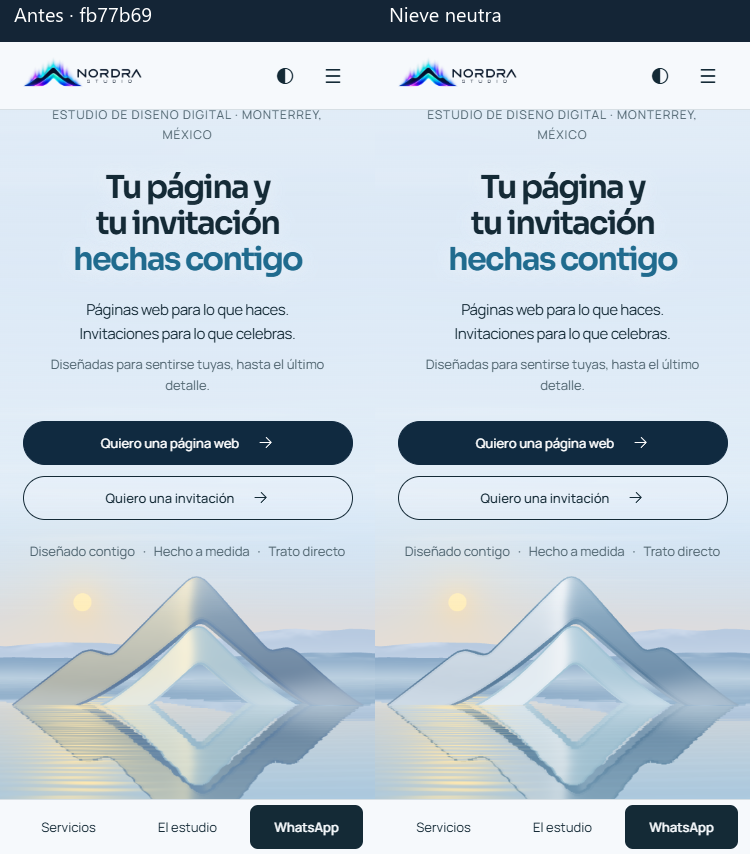

Comparación local con fb77b69, con la misma luz, cámara y tiempo. La cara iluminada pasa de crema a blanco frío; la sombra se acerca ligeramente al cyan. El filo cálido queda limitado a la cresta superior. El lago refleja el nuevo material de la montaña.

Se muestreó el interior de las letras en doce fases de iluminación. Las relaciones fueron idénticas antes y después en las cuatro vistas.
| Vista | Titular | Acento |
|---|---|---|
| ES · 1440 px | 12,42:1 | 4,82:1 |
| ES · 375 px | 12,09:1 | 4,81:1 |
| EN · 1440 px | 12,40:1 | 4,81:1 |
| EN · 375 px | 12,08:1 | 4,81:1 |
La comparación nocturna con reloj congelado y el mismo rasterizador produjo cero píxeles distintos de 6.571.000 en cuatro formatos. Resultados nocturnos.
Se regeneraron los ocho pósteres claros y sus parches de orilla para incluir el nuevo reflejo. La calibración de la cámara se mantuvo. Pasaron typecheck, las 299 pruebas de Node, las comprobaciones de Posada, build y check:build.